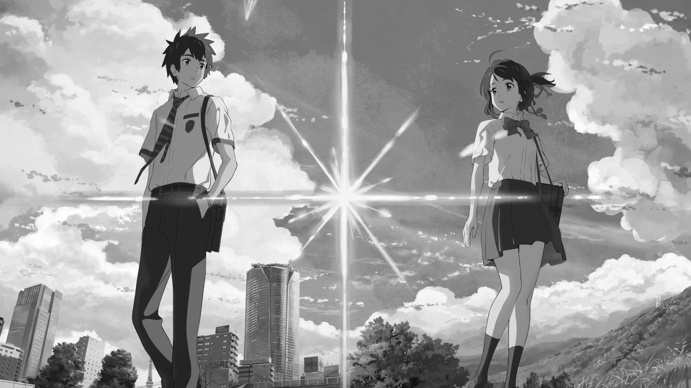
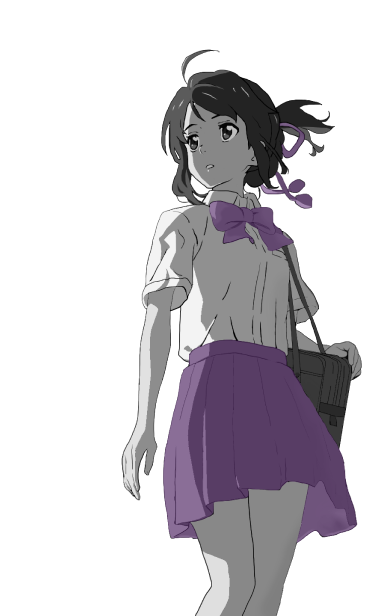
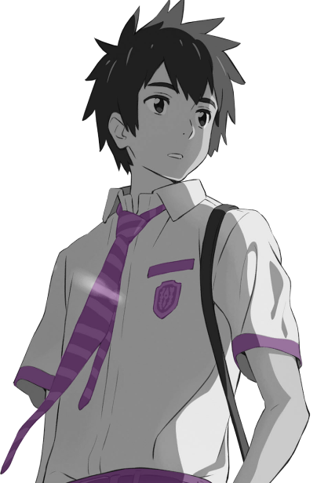

Handlung:
Der Tokyo-Junge
Taki
und das Provinzmdchen
Mitsuha
entdecken, dass zwischen ihnen eine seltsame Verbindung
besteht. In einem Traum tauschen sie die Körper und leben das
Leben des anderen. Doch eines Tages verschwindet diese
Fähigkeit so plötzlich, wie sie aufgetaucht ist. Taki beschließt,
Mitsuha um jeden Preis zu finden.

Figuren:

Miyamizu Mitsuha
(宮水 三葉) ist eine
Highschool-Miko aus einer in den Bergen
versteckten Provinzstadt. Eine sehr
starke und entschlossene Person. Ihr
Vater ist der örtliche Bürgermeister, der
den Tempel und die Familie nach dem
Tod seiner Frau verlassen hat, also lebt
sie mit ihrer jüngeren Schwester und
Großmutter in der Grundschule
zusammen. Müde von der Provinz träumt
das Mädchen davon, in Tokio zu leben.
Gesprochen von:
Mone Kamisiraishi

Taki Tachibana
(立花 瀧) ist ein
Gymnasiast, der im Zentrum Tokios
lebt. In seiner Freizeit trifft er sich mit
Freunden und arbeitet halbtags in
einem italienischen Restaurant, um
seinen Lebensunterhalt zu bestreiten.
Interesse an Architektur und anderen
bildenden Künsten. Erschöpft vom
Tempo der Großstadt träumt Taki von
einem unbeschwerten Leben irgendwo
in den Bergen.
Gesprochen von:
Ryunosuke Kamiki
Wenn Sie interessiert sind und die neuesten Informationen
über die bevorstehende Veröffentlichung des Anime erhalten
möchten, schreiben Sie Ihre E-Mail-Adresse.
Bestätigen